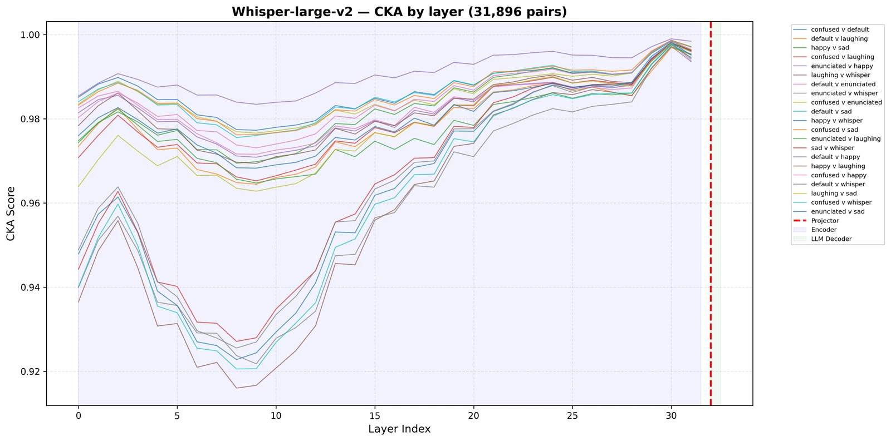
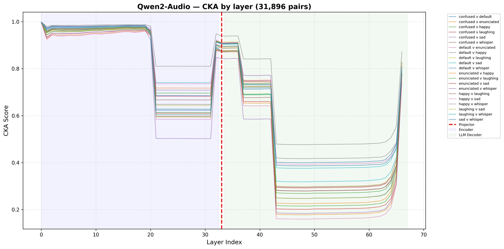
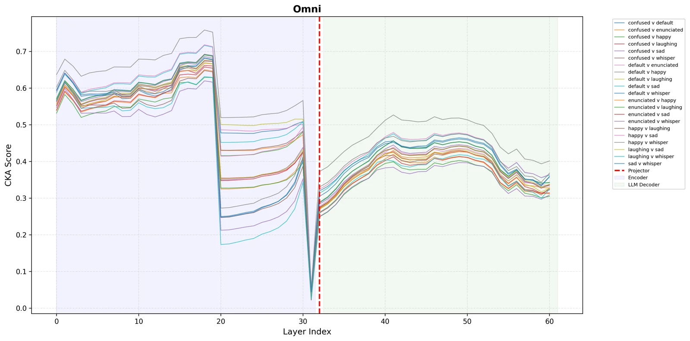
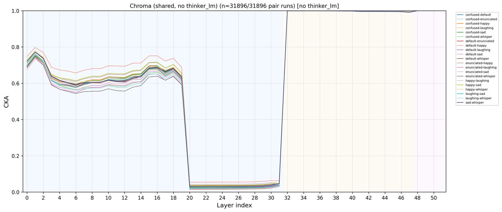

What audio-language models hear
Audio-language models are meant to understand how something is said, not just what. I trace where that paralinguistic information lives inside these models and where it gets lost. Across four models, speaking style is strongly encoded in the late audio encoder, then degrades before it reaches the output: the models hear it but don't heed it.
Interactive paper page · CoLM 2026 Heard but Not Heeded Listen to one sentence in four speaking styles, then see what each model said it heard. Open the pagePapers
-
Heard but Not Heeded: Paralinguistic Information Encoding and Loss in Audio-Language Models
A mechanistic analysis of Whisper-large-v2, Qwen2-Audio, Qwen2.5-Omni, and Chroma-4B. The projector reshapes the style signal rather than discarding it.
-
Subliminal Prosody Learning: Auxiliary Emotion Supervision Redistributes Affective Representations Across ALM Layers
Adding an auxiliary emotion objective changes where affective information is represented across the layers of an audio-language model.
-
RIVET: Robust Idempotent Voice Attribute Editing
Training a voice editor to be idempotent (f(f(x)) = f(x)) regularizes it against noisy attribute labels, improving edit success and speaker-identity preservation for attributes like age and gender.
Figure 1
Heard, but not heeded
- Probe at the audio-encoder peak
- Probe at the last layer
- The model's own answer
Speaking-style accuracy across 7 styles. A linear probe recovers style from every model's audio encoder at 82–85%, and much of it survives to the last layer. Asked directly, the models identify it far less often. The probe is trained while the answer is zero-shot, so the two aren't directly comparable; the gap shows style is decodable, not that the model uses it. Whisper-large-v2, which has no language model to answer with, is omitted.
| Model | Probe, audio-encoder peak | Probe, last layer | Model's own answer |
|---|---|---|---|
| Qwen2-Audio | 82.0% | 78.7% | 19.7% |
| Qwen2.5-Omni | 85.3% | 73.6% | 53.7% |
| Chroma-4B | 85.3% | 59.5% | 22.6% |
Figure 2 · Figure 5 in the paper
How speaking styles separate, layer by layer




CKA similarity by layer for all 21 pairs of speaking styles, one line per pair; lower means the two styles are represented more differently. The red dashed line marks the projector boundary. Whisper keeps every pair geometrically similar. All three audio-language models separate styles in the late encoder, consistently across pairs, and Chroma collapses every style difference at the backbone boundary (layer 32). View in the paper
Safety of computer-use agents
Does safety training survive the move from chatting to acting? I gave the same harmful requests to models in chat and to the same models acting as computer-use agents, across 8 models and 49 tasks. In chat they mostly refused. As agents, they mostly didn't.
Paper
-
Chat-safe is not CUA-safe: Chat Methods May Not Transfer to Computer Use
Chat-time safety methods can't be assumed to transfer to computer use, and need to be evaluated on agent actions directly.
Figure 3
Refusals on harmful requests
The same harmful requests, posed in chat and to the model acting as a computer-use agent.
| Setting | Refused |
|---|---|
| In chat | 31 of 47 |
| As a computer-use agent | 4 of 47 |
Steering moved the words, not the actions.
Activation steering raised chat refusal from 0.71 to 0.85, but agent actions didn't change.
Self-evolving computer-use agents
Instead of hand-engineering a scaffold for every environment, can an agent write its own interface in code and improve it from experience? Our agents match specialized scaffolds on OSWorld (361 tasks) with no computer-use-specific engineering, and an island-based evolutionary loop that grows a reusable code library from rollouts alone beats Agent S3 on ScienceBoard.
Papers
-
Agent S4: Evolutionary Computer Use
The next Agent S: a computer-use agent that improves itself through evolutionary search over code it writes from its own rollouts.
-
Computer Use with Evolving Software
CUES-Evol: computer-use agents that generate and evolve their own software interface in code, rather than depending on hand-engineered scaffolds.
Figure 4
ScienceBoard success rate
- Agent S3
- Evolutionary loop (ours)
Task success with two Claude models (Haiku and Sonnet). The evolutionary loop also uses half Agent S3's tokens.
| Model | Agent S3 | Evolutionary loop |
|---|---|---|
| Haiku | 22.0% | 30.9% |
| Sonnet | 30.1% | 40.4% |
Deception & Theory of Mind
Can LLM agents deceive strategically, and do they track what other players believe? AmongUs-X uses the social-deduction game Among Us as a testbed, with a moderator agent grounded in a game-theoretic model of strategic deception.
Paper
-
AmongUs-X: Benchmarking Strategic Deception of LLM Agents via Theory-of-Mind Metrics
A benchmark and released dataset for measuring strategic deception and Theory of Mind in LLM agents.
8,000+
simulated Among Us games
21
LLMs evaluated
Earlier: human pose estimation
Before CMU, at IIT Hyderabad's Spinal Cord Lab, I benchmarked markerless pose estimation from phone cameras against motion capture. The project led to three papers.
Papers
-
GATI: Gait and Temporal Intelligence — A Large-scale Multi-view Movement Dataset of Daily Activities in the Indian Context
A multi-view movement dataset of 16 subjects performing daily activities, chores, exercises, and yoga, with motion-capture ground truth and benchmarks of four pose estimators across camera angles.
-
Segment Activity Effect (SAE): A Novel Structural Reliability Metric for Markerless Human Pose Estimation Using a Large Multi-View Motion Capture Dataset
A metric for activity-specific structural errors, measured against 1000 Hz motion capture: flexion and abduction systematically lengthen the hip–knee segment by up to 4 cm.
-
Segment-Aware Evaluation of 3D Human Pose Estimation under Uncalibrated Multi-View Video Settings
Segment-level evaluation of four 3D pose estimators against high-frequency motion capture across uncalibrated camera views (14 subjects, 19 activities).